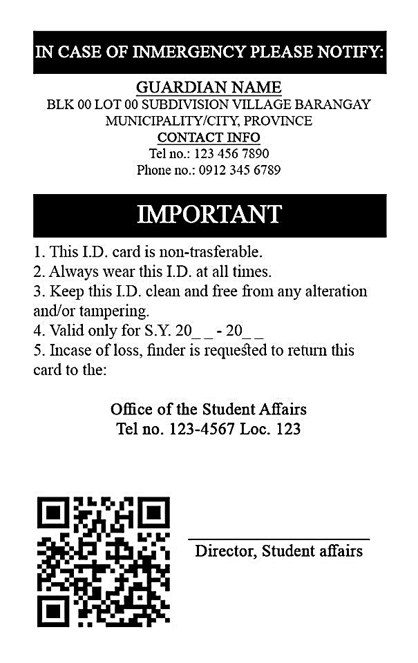
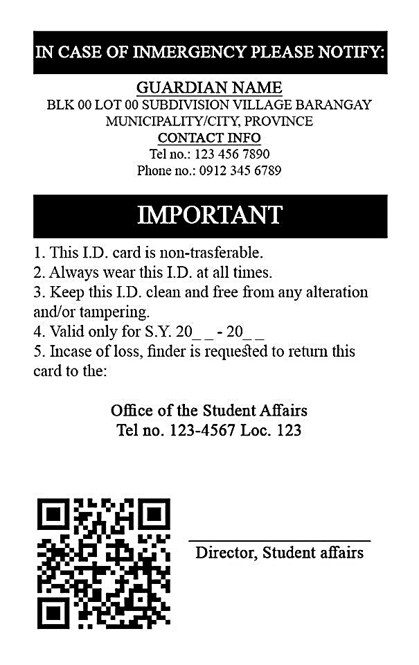
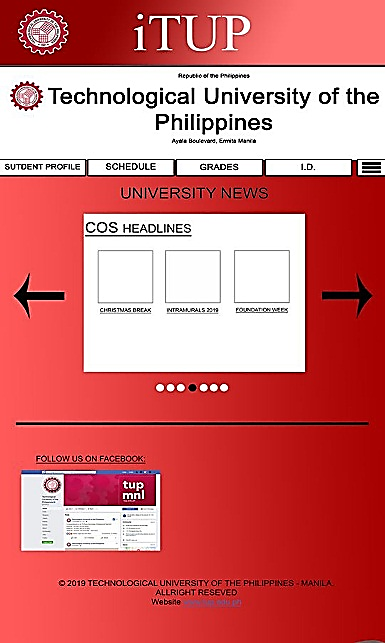
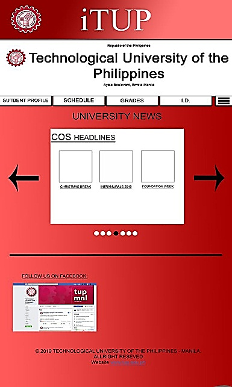

Identity Card
 

Proposed School ID
Technology has always been used in various ways, and has remained a key factor in the progress of modern day society. Overtime, it became a tool towards the development of more advanced economies. It is without a doubt that people rely on it due to the benefit it consistently brings, alleviating the quality of life.
The researchers will make an identity card which has a chip on it. This chip is not like any other. It is designed to make the lives of both students and parents more convenient. The identity card has two main features: first it can be used as a paying card and the second one is for Global Positioning System (GPS). These things will only be available in the school’s vicinity. Along with the identity card is an application which can be downloaded. This application will help the students and the parents to know the different things that are happening around the school. There are also different features that are suitable for the students, parents, teachers and administration of the school.
The above photo is our proposed design of School ID. Inside of this is a microchip that will serve as a GPS to locate the ID whenever it was lost. Aside form this, the chip will also use as a detector through tapping to the scanner. Lastly, the ID is also embedded with QR code, that may use through scanning.
 
